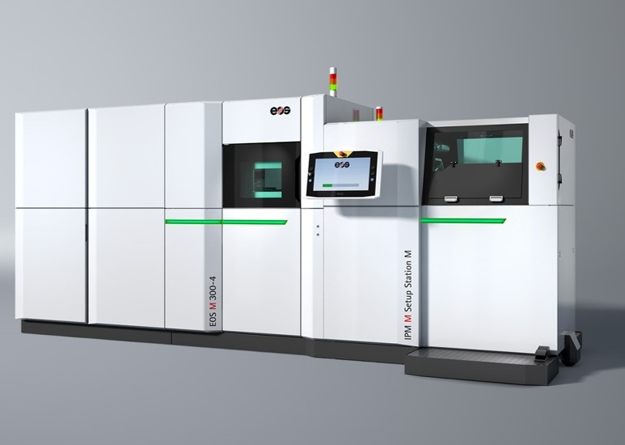
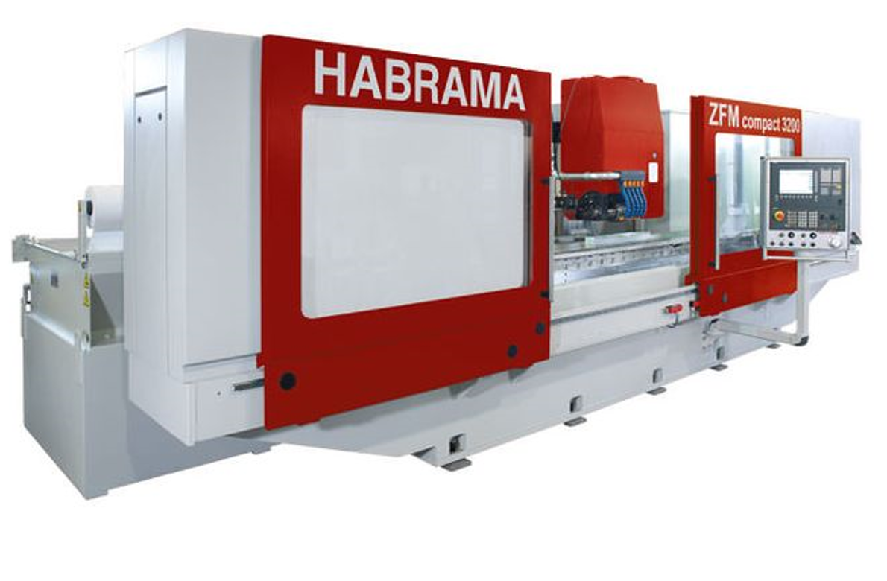

| CNC Machining | Brand | Model | Capacity | Image |
|---|---|---|---|---|
| CNC Turning Center | DOOSAN | 4100L | Chuck Size : 15" Spindle Power: 30 kW Max. Turning Diameter: 568 mm Max. Turning Length: 3068 mm |
 |
| Vertical Machining Center | OKUMA | MA550V | X-Axis: 1300 mm Y-Axis: 560 mm Z-Axis: 560 mm Power: 15 kW |
|
| Vertical Machining Center | HAAS | VF-2 | X-Axis: 770 mm Y-Axis: 400 mm Z-Axis: 500 mm Power: 22.4 kW |
|
| Vertical Machining Center | DMG MORI | DMV 115 | X-Axis: 1150 mm Y-Axis: 700 mm Z-Axis: 550 mm Max. Workpiece Weight: 1500 kg |
|
| Turning Center | DOOSAN | 2100LY | Chuck Size : 6" Spindle Power: 15 kW Max. Turning Diameter: 300 mm Max. Turning Length: 510 mm |
|
| Vertical Machining Center | DOOSAN | DNM6700 | X-Axis: 1300 mm Y-Axis: 670 mm Z-Axis: 625 mm Power: 18.5 kW |
|
| Turning Center | OKUMA | LB4000 EX II | Chuck Size : 20" Spindle Power: 30 kW Max. Turning Diameter: 480 mm Max. Turning Length: 2150 mm |
|
| Turning Center | OKUMA | LU4000 EX | Chuck Size : 20" Spindle Power: 22 kW Max. Turning Diameter: 480 mm Max. Turning Length: 1250 mm |
|
| 5-Axis CNC | DMG MORI | DMU-50 | X-Axis: 500 mm Y-Axis: 450 mm Z-Axis: 400 mm B-Axis: -5° +110° Max. Workpiece Diameter: 630 mm |
|
| 5-Axis CNC | DMG MORI | DMU-65 monoBLOCK | X-Axis: 735 mm Y-Axis: 650 mm Z-Axis: 560 mm Max. Workpiece Diameter: 840 mm |
|
| 5-Axis CNC | DMG MORI | NMV5000 DCG | X-Axis: 730 mm Y-Axis: 510 mm Z-Axis: 510 mm Zero backlash |
| Sheet Forming | Brand | Model | Capacity | Image |
|---|---|---|---|---|
| Laser Cutting | DURMA | HD-F 4020 | X-Axis: 4100 mm Y-Axis: 2100 mm Z-Axis: 185 mm Power: 4 kW |
 |
| 5- Axis Laser Cutting | TRUMPF | TRULASER 5030 | X-Axis: 3000 mm Y-Axis: 1500 mm Z-Axis: 700 mm B-Axis: ±135° mm Power: 2 kW |
 |
| 5- Axis Laser Cutting | TRUMPF | TRULASER 5030 | X-Axis: 3000 mm Y-Axis: 1500 mm Z-Axis: 700 mm B-Axis: ±135° mm Power: 4 kW |
|
| Press Brake | DURMA | AD-S 30175 | Force : 175 Tonnes Bending Length: 3050 mm Stroke: 265 mm |
|
| Hydraulic Press | ALPA | ASP800 | Force: 800 Tonnes X-Axis: 2900 mm Y-Axis: 2200 mm |
|
| Roll Forming | Servo Steel | RF - 4011 | 2 x 11 kW Driver Uncoiler 4140 Stell at 60 Rockwell |
| 3D Printing | Brand | Model | Capacity | Image |
|---|---|---|---|---|
| FFF Printing | Ultimaker | S5 | X-Axis: 330 mm Y-Axis: 240 mm Z-Axis: 300 mm Power: 500 W |
|
| Metal SLS Printing | EOS | M300 | X-Axis: 300 mm Y-Axis: 300 mm Z-Axis: 400 mm Scan Speed: up to 7m/s |
 |
| Polymer SLS Printing | EOS | P110 | X-Axis: 200 mm Y-Axis: 250 mm Z-Axis: 330 mm Scan Speed: up to 5m/s |
| Welding Machining | Brand | Model | Capacity | Image |
|---|---|---|---|---|
| Friction Stir Welding | China FSW Center | FSW-LM-BM16-2D | X-Axis: 2300 mm Y-Axis: 1500 mm Z-Axis: 300 mm Up to 20 mm thickness in Al alloys |
|
| Arc Welding | YASKAWA | AR2010 | Horizontal Reach: 2010 mm Veritcal Reach: 3650 6- axis Power: 2 kW |
 |
| Surface Finishing | Brand | Model | Capacity | Image |
|---|---|---|---|---|
| CNC Internal Cylindrical Grinding | STUDER | S121 | Workpiece Diameter: 360 mm Workpiece Length: 300 mm Spindle Power: 18 kW Swiveling Range: 210° |
|
| CNC External Cylindrical Grinding | STUDER | FAVORITCNC | Workpiece Diameter: 350 mm Workpiece Length: 680 mm Spindle Power: 9 kW Swiveling Range: 210° |
|
| Cylindrical Grinding | STUDER | S30 | Workpiece Diameter: 450 mm Workpiece Length: 650 mm Spindle Power: 6 kW Swiveling Range: 180° |
| Gear Manufacturing | Brand | Model | Capacity | Image |
|---|---|---|---|---|
| CNC Gear Hobbing | S&T Dynamics | GHO-200 | Max. Wheel Gear: 200 mm
Max. Module: 4,5 Max. Spindle Speed: 1500 rpm |
|
| Rack Milling | HABRAMA | ZFM Compact 3200 | X-Axis: 3250 mm Y-Axis: 430 mm Z-Axis: 310 mm Up to Module 36 |
 |
Clipper.
London, UK
Contact us 24/7 on support@clipper.com
Copyright © Your Website 2022
London, UK
Contact us 24/7 on support@clipper.com
Copyright © Your Website 2022